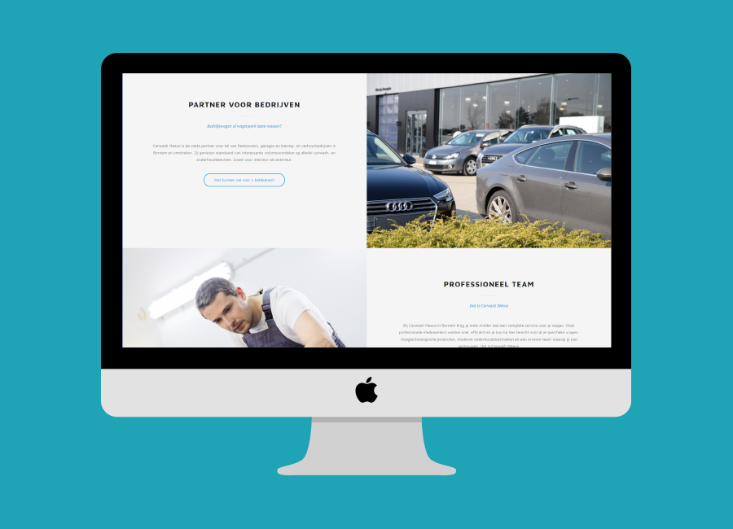
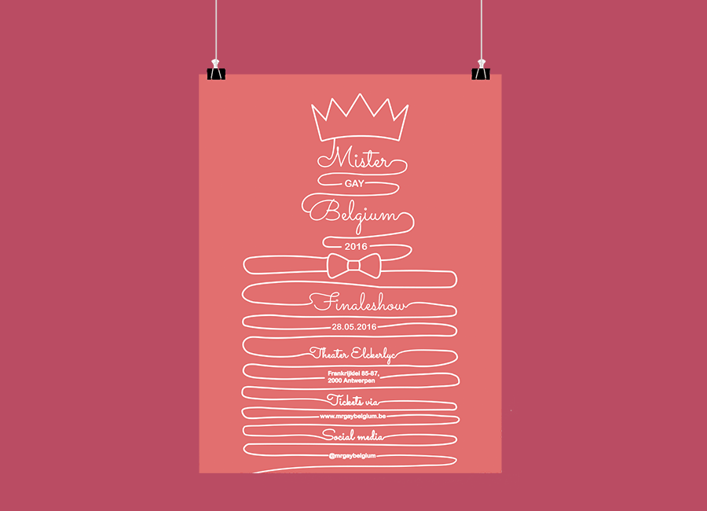

Ik ben Britt Verschueren, een jarige die gepasioneerd is door Webdesign. Ik hou ervan om websites
te ontwerpen en deze vervolgens ook uit te werken.
Op deze website staan alle uitwerkingen die ik heb gemaakt. De meeste hiervan tijdens mijn studie Grafische
en Digitale media aan de AP Hogeschool in Antwerpen.
Web

Grafisch design

Video
Zoeff!
Zoeff! is een website/webapplicatie die ik heb gemaakt voor mijn bachelorproef. Hierbij heb
ik een interactieve website gebouwd rond het concept van een maandelijke subscriptionbox
voor de Belgische Strip. De website leert vervolgens de gebruiker kennen via de verschillende
onderdelen van de applicatie
Het leert de bezoeker kennen via:
Een personaliteitsquiz,
Een stripmuur die de bezoeker kan samenstellen met zijn favoriete striphelden,
Een profiel waar ze hun favoriete strips, stripfiguren, klanknabootsingen, enzovoort
kunnen invullen. Verder kunnen ze ook profielberichten plaatsen.
Een forum waarop ze strips kunnen ruilen.
Niet alle delen zijn functioneel uitgewerkt, maar puur voor het geheel uit te werken zoals:
Het profiel
Het plaatsen van profielberichten
Het toevoegen/beantwoorden van forumberichten
Je kan inloggen naar de applicatie met username: test, wachtwoord: test .
Tijdens mijn stage heb ik gedurende 7-8 weken aan een webshop gewerkt met Magento. Hiervoor
heb ik een bestaand thema aangepast naar het design dat gemaakt werd voor de klant. Het
aangekochte thema was net nieuw, dus hier zaten nog een aantal fouten in. Deze problemen
heb ik zo goed mogelijk proberen oplossen op vlak van design.
Voor een schoolopdracht heb ik een wetransfer banner gemaakt in een bepaalde grafische stijl.
Ik heb hiervoor line art gekozen en vervolgens bovenstaande banner ontworpen. Verder
zat als onderdeel van deze opdracht ook het maken van een poster in dezelfde stijl. (deze
kan bekeken worden bij de grafische ontwerpen.)
Deze startpagina heb ik gemaakt in mijn eerste jaar van mijn opleiding. Op deze site heb
ik dan mijn meest gebruikte websites gelinkt zodat ik bij het openen van de browser makkelijk
kan navigeren.
Datum:
April 2015
Type:
Web Development
Website ontwerp grafisch designer
Deze website was ook voor een schoolopdracht waarbij we rond een zelfgekozen grafische designer
moesten werken. Ik heb dan gekozen voor Noma Bar gekozen. Hiervoor moesten we vervolgens het ontwerp voor een redactionele website maken.
Deze werd dan ook in de stijl gemaakt van de designer.
Tijdens mijn stage heb ik ook de opportuniteit gekregen om een nieuwsbrief te themen. Dit
had ik eerder nog nooit gedaan en was dus zeer leerrijk. Om deze e-mail te testen voor
de verschillende webclients werd gebruik gemaakt van Litmus.
Deze website heb ik gemaakt tijdens mijn stage in het tweede jaar van mijn opleiding. Hier
heb ik gedurende 6 weken aan gewerkt. Voor deze website heb ik een bestaand thema mede
aangepast naar het design van de website. Verder heb ik deze website ook volledig in
Modx geplaatst. Hier had ik voorheen
nog niet mee gewerkt.
Met behulp van _s en sass heb ik zelf een Wordpress thema gemaakt. Underscore S is een 100
uren start voor het maken van een wordpress thema. Hierbij moest je vooral nog styling
toevoegen. Zo heb ik het thema helemaal rond Kerst gestyled.
Voor een schoolopdracht heb ik een poster gemaakt in een bepaalde grafische stijl voor de
Finale van Mister Gay Belgium. Ik heb hiervoor line art gekozen en vervolgens deze poster
ontworpen. Verder zat als onderdeel van deze opdracht ook het maken van een Wetransfer
banner in dezelfde stijl. (deze kan bekeken worden bij de websites.)
Deze poster heb ik ontworpen voor de toneelvoorstelling van Grietje. Hierbij heb ik gekozen om takken te gebruiken om het bos
voor te stellen waar Grietje zich afspeelt. Deze poster heb ik vervolgens ook omgezet
naar een promotievideo. (deze kan bekeken worden bij de video's.)
Voor een schoolopdracht heb ik een hele huistijl ontworpen voor een "imago verlagende zaak"
in Antwerpen. Deze heb ik vervolgens ook omgezet in een huisstijlgids.
Voor de nieuwe campus van de AP hogeschool in Antwerpen moesten we op een leuke manier bepaalde
informatie weergeven in de gangen. Deze omvatten bv. "Lichten uit bij het verlaten van
het klaslokaal", "Niet roken" en "Handen wassen na toiletgebruik". Deze heb ik vervolgens
weergegeven in deze posters.
Korte promotievideo tentoonstelling "Een Andere Wereld"
Deze korte promotievideo is voor de tentoonstelling van "Een Andere Wereld" in het dokter
Guislain Museum. Deze hoort bij de poster voor "Een Andere Wereld" die je kan bekijken
bij de grafische ontwerpen.
Voor de nieuwe gekozen friskies verpakking moest er ook een promotievideo gemaakt worden.
Hiervoor heb ik een animatievideo gemaakt in een echte omgeving.
Voor een opdracht rond de Warmste week van Studio Brussel heb ik voor onze actie een aantal
korte animatievideo's gemaakt om ons concept bekend te maken via Social Media.7 Dit was
een groepswerk, hierbij heb ik enkel de animaties gemaakt en niet de tekeningen.
Een jaarverslag van een belgisch bedrijf omzetten tot een applicatie? Dit is de hele omvang
van deze opdracht. Het jaarverslag dat ik heb gebruikt voor deze opdracht was dat van
Telenet.
Een jaarverslag van een belgisch bedrijf omzetten tot een applicatie? Dit is de hele omvang
van deze opdracht. Voor mijn herexamen heb ik vervolgens gekozen om het jaarverslag van
Ter Beke te gebruiken.